HIN Stack 2.0.2
Table of Contents
000: Welcome to Human Interface Notes
Note #0 Welcome to Human Interface Notes
Stack Version 1.4 July 1990
_______________________________________________________________________________
Human Interface Note #0 (this card) accompanies each release of Human Interface Notes. These documents are written and produced by the Macintosh Human Interface Group and published in conjunction with Developer Technical Support for all Apple developers.
This version of the stack is the first release of Human Interface Notes in HyperCard, and it includes all Human Interface Notes (0-10) released as of June 1990. Links to other stacks will be active in a future version.
These documents correct and enhance the Human Interface Guidelines: The Apple Desktop Interface; they also incorporate and supersede the previously released
“Human Interface Updates.” This means that all you need is the Human Interface Guidelines and these documents to stay abreast of the latest recommended interface guidelines (unless, of course, you want to be on the very cutting edge of interface technology and read Tog’s article in Apple Direct every
month). These documents and the book will eventually be incorporated into a single, comprehensive human interface reference, but you’ll need both until that time.
You can access the Notes by number, release date, subject, and index, or you may want to use HyperCard’s built-in search function to find a topic if the index does not list it. (To use the search function, click on the icon of a magnifying glass.)
You do not need to be familiar with HyperCard to use this stack; if at any time
you are unclear about how something in the stack works, try clicking on the
object in question, and its functionality should become apparent.
These documents are not done in a vacuum. Many of the guidelines you see are a direct result of developer feedback. If you have any questions or ideas for interface extensions or clarifications, please contact the Macintosh Human Interface Group at one of the following electronic addresses:
AppleLink: MacInterface
Internet: MacInterface@AppleLink.Apple.com
We want Human Interface Notes to be distributed as widely as possible, so they are sent to all Partners and Associates at no charge; they are also posted on AppleLink in the Developer Services bulletin board and other electronic sources, including the Apple FTP site (IP 130.43.2.2).
We place no restrictions on copying Human Interface Notes, with the exception that you cannot resell them, so read, enjoy, and share. We hope these guidelines provide you with lots of useful information while you are developing software for Apple computers.
001: User Observation - Guidelines for Apple Developers
Note #1 User Observation: Guidelines for Apple Developers
Written by: Kathleen Gomoll & Anne Nicol January 1990
(Supersedes Human Interface Update #11)
_______________________________________________________________________________
Discussion of guidelines for user observation.
_______________________________________________________________________________
Introduction
User testing covers a wide range of activities designed to obtain information on the interactions between users and computers. Most user testing requires considerable expertise in research methods, as well as skill in using complex data collection tools. For example, user testing techniques include: interviews, focus groups, surveys, timed performance tests, keystroke protocols, and controlled laboratory experiments. Of the many user testing techniques available, user observation is one technique that can be used by anyone with a concern for including the user in the product development process.
User observation involves watching and listening carefully to users as they work with a product. Although it is possible to collect far more elaborate data, observing users is a quick way to obtain an objective view of a product.
When to observe users
User observation should be an integral part of the design process—from the initial concept to the product’s release. Software design that includes user observation is an iterative process; user feedback provides the data for making design modifications.
As Figure 1 demonstrates, this iterative process assumes that preliminary human interface designs should exist prior to the development of underlying code. Interface designs should be tested frequently to determine which design should be implemented. Then, as the code develops, the entire product should be tested and revised several times.
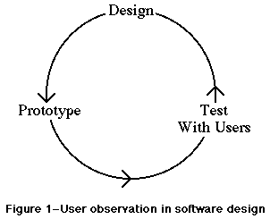
Figure 1–User observation in software design
Preparing for a user observation
Set an objective
Before you do any testing, you should take time to figure out what you’re testing and what you’re not. In other words, determine an objective for your test that focuses on a specific aspect of the product. By limiting the scope of the test, you’re more likely to get information that helps you solve a specific problem.
Design the tasks
Your test participant will work through one or more specific tasks. These tasks should be real tasks that you expect most users will do when they use your product. The entire user observation should not run over an hour, so you should design tasks that focus on the part of the product you’re studying. For example, if you want to know whether your menus are useful, you could design a task that requires the participant to access the menus frequently. After you determine which tasks to use, write them out as short, simple instructions.
Important: Your instructions must be clear and complete, but
they should not explain how to do things you’re trying to test.
For example, if you want to find out whether users can navigate
through your program easily, don’t give them instructions for
navigation. Or, if you want to know whether your interface is
self-explanatory, don’t describe how it works. This concept is
extremely important to remember. If you teach your participants
about something you’re trying to test, your data will not be useful.
Decide upon the use of videotape
Although you can observe users effectively without using special recording equipment, you may want to use videotape to capture the entire session. By videotaping the session, you collect an enormous amount of valuable information that you can review and analyze after the test is over. If video equipment is not available, a tape recorder can be helpful for recording what is said during the test.
Determine the setting
The ideal setting for user observation is a quiet, enclosed room with a desk, the appropriate hardware and software, a video camera, and two microphones (one for you and one for the participant). Of course, you may not have all these things available when you need to observe; therefore, you should try to approximate the ideal setting as closely as you can. If you have to conduct the observation in a regular office, ask the people around you to keep the noise level down during the observation. The key is to make the environment as interruption-free as possible. Get the participants out of their offices, away from phone calls and people who might drop by.
Find representative users
When looking for participants, try to find people who have the same experience level as the typical user for your product. Don’t ask people you work with regularly to be participants because they are probably familiar with your product or your opinions about the product. Generally, you should look for people who are familiar with the hardware you use but are not familiar with your product.
You may want to ask pairs of people to work together on your tasks. You’ll find that people working in pairs usually talk more than people working alone, and they also tend to discuss features of the product and explain things to each other.
10 steps for conducting a user observation
The following instructions guide you through a simple user observation. Remember, this test is not designed as an experiment, so you will not get statistical results. You can, however, see where people have difficulty using your product, and you can use that information to improve it.
These instructions are organized into steps. Under most of the steps, there is some explanatory text and a bulleted list. The bulleted list contains sample statements that you can read to the participant. (Feel free to modify the statements to suit your product and the situation.)
1. Introduce yourself.
2. Describe the purpose of the observation (in general terms).
Set the participant at ease by stressing that you’re trying to
find problems in the product. For example, you could say:
• You’re helping us by trying out this product in its
early stages.
• We’re looking for places where the product may be
difficult to use.
• If you have trouble with some of the tasks, it’s
the product’s fault, not yours. Don’t feel bad;
that’s exactly what we’re looking for.
• If we can locate the trouble spots, then we can go
back and improve the product.
• Remember, we’re testing the product, not you.
3. Tell the participant that it’s okay to quit at any time.
Never leave this step out. Make sure you inform participants
that they can quit at any time if they find themselves becoming
uncomfortable. Participants shouldn’t feel like they’re locked
into completing tasks. Say something like this:
“Although I don’t know of any reason for this to happen,
if you should become uncomfortable or find this test
objectionable in any way, you are free to quit at any time.”
4. Talk about the equipment in the room.
Explain the purpose of each piece of equipment (hardware, software,
video camera, microphones, etc.) and how it is used in the test.
5. Explain how to “think aloud.”
Ask participants to think aloud during the observation, saying what
comes to mind as they work. By listening to participants think and
plan, you can examine their expectations for your product, as well
as their intentions and their problem solving strategies. You’ll
find that listening to users as they work provides you with an
enormous amount of useful information that you can get no other way.
Unfortunately, most people feel awkward or self-conscious about
thinking aloud. Explain why you want participants to think aloud,
and demonstrate how to do it. For example, you could say:
• We have found that we get a great deal of information from
these informal tests if we ask people to think aloud as they
work through the exercises.
• It may be a bit awkward at first, but it’s really very easy
once you get used to it.
• All you have to do is speak your thoughts as you work.
• If you forget to think aloud, I’ll remind you to keep talking.
• Would you like me to demonstrate?
6. Explain that you cannot provide help.
It is very important that you allow participants to work with your
product without any interference or extra help. This is the best way
to see how people really interact with the product. For example, if
you see a participant begin to have difficulty and you immediately
provide an answer, you lose the most valuable information you can gain
from user observation—where users have trouble, and how they figure
out what to do.
Of course, there may be situations where you have to step in and
provide assistance, but you should decide what those situations might
be before you begin testing. For example, you may decide that you can
allow someone to flounder for at least 3 minutes before you provide
assistance. Or, you may decide that there is a distinct set of problems
with which you can provide help.
As a rule of thumb, try not to give your test participants any more
information than the true users of your product will have. Following
are some things you can say to the participant:
• As you’re working through the exercises, I won’t be able to
provide help or answer questions. This is because we want to
create the most realistic situation possible.
• Even though I won’t be able to answer your questions, please
ask them anyway. It’s very important that I capture all your
questions and comments on tape.
• When you’ve finished all the exercises, I’ll answer any
questions you still have.
7. Describe the tasks and introduce the product.
Explain what the participant should do and in what order. Give the
participant written instructions for the tasks.
Important: If you need to demonstrate your product before the
user observation begins, be sure you don’t demonstrate something
you’re trying to test. (For example, if you want to know whether
users can figure out how to use certain tools, don’t show them
how to use the tools before the test.)
8. Ask if there are any questions before you start; then begin the
observation.
9. Conclude the observation.
When the test is over:
• explain what you were trying to find out during the test.
• answer any remaining questions the participant may have.
• discuss any interesting behaviors you would like the
participant to explain.
10. Use the results.
As you observe, you see users doing things you never expect them to do.
When you see participants making mistakes, your first instinct may be to
blame the mistakes on the participant’s inexperience or lack of
intelligence. This is the wrong focus. The purpose of observing users
is to see what parts of your product might be difficult or ineffective.
Therefore, if you see a participant struggling or making mistakes, you
should attribute the difficulties to faulty product design, not to the
participant.
To get the most out of your test results, review all your data carefully
and thoroughly (notes, the video tape or cassette tape, the tasks, etc.).
Look for places where participants had trouble, and see if you can
determine how your product could be changed to alleviate the problems.
Look for patterns in the participants’ behavior that might tell you
whether the product was understood correctly.
It’s a good idea to keep a record of what you found during the test.
That way, you have documentation to support your design decisions and
you can see trends in users’ behavior. After you’ve examined the
results and summarized the important findings, fix the problems you
found and test the product again. By testing your product more than
once, you can see how your changes affect users’ performance.
002: Design Principles for On-Line Help Systems
Note #2 Design Principles for On-Line Help Systems
Written by: Kathleen Gomoll & Anne Nicol January 1990
(Supersedes Human Interface Update #12)
_______________________________________________________________________________
Discussion of a set of criteria and guidelines for on-line help.
_______________________________________________________________________________
Introduction
As part of an ongoing effort to design and support a consistent interface to on-line help for our computers, Apple has been developing a set of criteria and guidelines for on-line help. These criteria are based on observations of users in our lab, reviews of the research, requests and comments from our developers, and—last, but not least—the Human Interface Guidelines: The Apple Desktop Interface. This is a working document. It reflects Apple’s current view on designing on-line help, and we will probably revise and expand it as we progress. In the future, we intend to distribute specific guidelines regarding access to on-line help and the display of help information. Ultimately, we hope to supply toolbox support for the interface features that we find, through user testing, to be most effective.
This document is divided into three sections: Principles, General guidelines, and Hints for structure and organization. The Principles section reflects Apple’s underlying design philosophy for on-line help. The General guidelines section puts guidelines for designing on-line help into the context of the principles outlined in Human Interface Guidelines. Finally, the Hints section lists suggestions for organizing and structuring help information. These hints come from developers and from current research.
Principles
On-line help should never be a substitute for good interface design.
This is our first and foremost principle. Before setting out to build a help system that “explains” a difficult interface, try to identify what makes the interface difficult—and fix the problems. When you have made your interface as clear as it can be, then develop a help system that aids users as they work.
Help should be context-sensitive; it should not take the user away from the task at hand.
Perhaps the biggest complaint users have about help systems is that they don’t want to leave their current application to get help. When users are forced to leave the context of their problem, they often forget the specifics of the problem. Also, users often have trouble applying the help information once they get back to the application because the help is no longer visible.
Help systems should assist users in framing their questions and provide different types of help for different questions.
When users need help, they often turn to local experts and ask questions. Human experts are often able to help users frame their questions so they can get the appropriate answer. Once the right question has been asked, help can be delivered quickly. Users’ questions fall into a relatively small number of distinct categories, and those categories call for different types of assistance. For example, we can make a clear distinction between the question
“What is this?” and the question “How do I do this?”
Help systems should be dynamic and responsive to individuals.
Different users need different kinds of help because they have individual learning styles and needs. For example, some users may want to be shown exactly how to do something, while others may want to explore and learn by their mistakes. If possible, on-line help systems should make use of the
user’s competence, learning style, level of experience and past actions to provide appropriate help.
Users shouldn’t need help on how to get help.
Help systems should be structurally simple and self-explanatory. Although your help system may require a few words of instruction (like “click here” or
“select a topic”), don’t fall into the trap of turning your help system into a complicated application that requires lengthy instructions.
General Guidelines
Make help accessible through recognition, not recall.
See-and-point (instead of remember-and-type): Users can choose any available action at any time—without having to remember a particular command or name. This paradigm requires only recognition, rather than recall, of the desired activities.
Put the help system under the user’s control.
Direct manipulation: Users want to feel that they are in charge of the computer’s activities. The user, not the computer, initiates and controls all actions. If the user attempts something risky, the computer provides a warning, but allows the action to proceed if the user confirms it. This approach
“protects” the beginner but allows the user to remain in control.
Support exploratory behavior by making an interactive help system.
User Control: People learn best when they’re actively engaged. Too often, however, the computer acts and the user merely reacts within a limited set of options. Allow users to try things out.
Place help options where they are visible to the user.
Direct manipulation: Users want topics of interest to be highlighted. They want to see what functions are available at any given moment.
See-and-point: Users rely on recognition, not recall; they shouldn’t have to remember anything the computer already knows.
Use graphics, animation, and sound.
Principles of Graphic Communication: The real point of graphic design, which comprises both pictures and text, is clear communication. In the Apple Desktop Interface, everything the user sees and manipulates on the screen is graphic.
Metaphors from the real world: Whenever appropriate, use audio and visual effects that support a real-world metaphor. Use animation for modeling user actions. Use sound for orienting attention and reinforcing information.
Hints for Structure and Content
On-line help should not be simply an on-line version of the print documentation.
As a method for communication, computers provide opportunities that books can’t provide. Use the computer’s capacity to its fullest by designing a help system that brings help to the user rather than requiring the user to page through an on-line book. Use the computer to link information in useful ways, and to create graphics, sound, animation, and examples.
Organize the help system in very small, addressable chunks of information.
By creating a help system that is modular, you allow tremendous flexibility. Small chunks of information can be grouped in strategic ways to provide users with only the most relevant information.
Include both search and browse capabilities.
Build a “find” feature into your help system to allow users to quickly search for specific topics. Also allow users to browse through available help topics, since it’s often easier to recognize a topic than to think of an appropriate keyword.
Allow users to discard help.
Users should never be forced to use the help system to use an application. A help system should always be an optional aid.
Make the help system customizable and editable.
To make the most efficient use of a help system, users should be able to customize and edit the information to suit their own needs. For example, users may want to put a marker on a piece of information they access frequently, or they may want to eliminate or change information that doesn’t suit their needs.
Include help information that can be delivered automatically.
Sometimes users make the same error repeatedly. Rather than waiting for the user to ask for help, the help system should be able to detect problems and offer help automatically.
Incorporate hypertext features for linking information.
Hypertext allows users to press “buttons” to receive context-sensitive help in as much or as little depth as they require. By linking chunks of help information in logical ways, you can develop a help system that is responsive to users’ immediate needs.
Use the help system to inform users about short-cuts.
Short-cuts are facts that experts typically know. A help system that volunteers answers without forcing users to ask questions can help novices become experts.
_______________________________________________________________________________
Suggested Readings
Apple Computer, Inc. (1987). Human Interface Guidelines: “The Apple Desktop
Interface.” Reading, MA: Addison-Wesley Publishing Co.
Borenstein, N.S. (1985). “The Design and Evaluation of On-line Help Systems.”
Ph.d thesis, Carnegie-Mellon University.
Christensen, M. (1984). “Background for the Design of an Expert Consulting
System for On-line Help.” Thesis proposal, Temple University.
Owen, D. (1986). “Answers first, then questions.” In D.A. Norman & S.W.
Draper (Eds.), User Centered System Design, (p. 361-375).
Hillsdale, NJ: Erlbaum.
003: Dueling Metaphors - the Desktop & HyperCard
Note #3 Dueling Metaphors: the Desktop & HyperCard
Written by: Tom Erickson January 1990
_______________________________________________________________________________
Discussion of the differences between the metaphors of the Desktop and HyperCard.
_______________________________________________________________________________
Metaphors help users form a coherent model of an application’s human interface. In an interface with a well-chosen metaphor like the Desktop, users find it easy to predict the results of an action or to figure out which action produces a desired result.
While a single, clear metaphor aids human-computer communication, mixing metaphors may cause significant problems. Even two metaphors which work well separately may interfere with one another when they are used within the same human interface.
The Desktop and HyperCard metaphors can interfere with one another. This document describes the conditions under which such interference can occur, and what can be done to avoid it.
In the Desktop metaphor users do things by pressing rounded-rectangle buttons, choosing menu commands, and double-clicking (opening) icons. Each type of control object has a distinct, carefully-defined appearance, as well as a different method of access. You can tell how to use a control object just by looking at it.
In HyperCard, buttons are the principle control objects, but in HyperCard, a button can look like anything—an icon, an item in a list, a push button, a menu item. Since a click is the only way of starting an action, the appearance of a button is less important than in the Desktop: the user knows that all HyperCard control objects respond to a single click.
When elements of the Desktop and HyperCard metaphors are combined, confusion may result. In an interface with a mixed metaphor, a user can no longer predict the result of clicking an item in a list or clicking on an icon. Does a click select the object, as in the Desktop metaphor, or does it launch an action, as in the HyperCard metaphor? Clicking on an icon to select it and having it launch an action because it’s acting like a HyperCard button is—at the very best—disconcerting. Such unpredictability destroys the comfortable feel that is essential to a good human interface . Users confronted with such unpredictability are likely to become lost, confused, and unhappy with your product.
Do not mix the Desktop and HyperCard metaphors. If you’re writing a HyperCard stack, don’t include icon-like buttons that must be double-clicked. If you’re writing a Desktop application, don’t include (to take a real example) a house icon that takes the user somewhere when it’s clicked, like the Home Card button in HyperCard. Desktop applications should not contain HyperCard-like interface elements.
The most important point is this: It should always be obvious whether the user is in a Desktop application or a HyperCard stack. And this means obvious at a glance; users should not have to read text or remember whether an application or a stack was launched. If the context is obvious, the user knows the result of a click—without having to think about it.
004: Movable Modal Dialog Boxes
Note #4 Movable Modal Dialog Boxes
Written by: Scott Jenson January 1990
_______________________________________________________________________________
Discussion of a new modal window style that can be moved by dragging its title bar.
_______________________________________________________________________________
A standard modal dialog box works well as long as you, the developer, are asking such questions as “How do you want to print this document?” or “Save changes before quitting?” However, sometimes you need to ask a question and the user needs to see the document contents to make a decision. A common example is a Find… or Replace… dialog box. The usual rule of choice is to use a modeless dialog box since 1) it’s less intrusive on the many different ways people may want to use your software, and 2) since it’s movable, the user can easily move it around to view covered parts of the document. There are some cases, however, when the question or response task needs to be modal, but the user still might want to view what’s behind the dialog box. An example would be a complex attribute change like adding a border to a paragraph of text. You might want to see the text or even other paragraphs while you’re setting up the border.
In these cases use a movable modal dialog box. This window design gives you visual feedback both that it is a modal dialog box and also that you can drag it from the title bar. Figure 1 shows a simple example of this dialog box style.
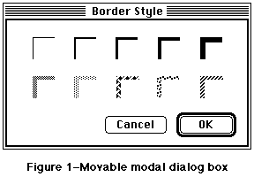
Figure 1–Movable modal dialog box
A couple of points to keep in mind:
• Any selection made in the dialog box should immediately update the
document contents. The OK button then means “accept this change”
and the Cancel button means “undo all changes done by this dialog box.”
Some applications use an Apply button to approximate this behavior but
this only confuses the meaning of OK and Cancel.
• With this dialog box, it is not necessary to keep your application from
switching to other MultiFinder layers. System 7.0 uses this method to
show an application is busy with some time-consuming operation, yet can
still be switched into the background.
• When you create this dialog box, be sure to use the new window type.
Do not draw a rect in a documentProc. System 7.0 has as new selector
on the standard 'WDEF' resource for this type of window. For System
Software 6.0.x, you can obtain a new 'WDEF' resource on AppleLink in
the the Human Interface section of the Developer Services Bulletin Board
or request a copy by writing to AppleLink address MACINTERFACE.
• Make sure to save the position of the window for the next time it’s used.
• Do not use this dialog box when a modeless dialog box would work instead.
005: What “Cancel” Means
Note #5 What “Cancel” Means
Written by: John Sullivan January 1990
_______________________________________________________________________________
“Cancel” means “dismiss this operation, with no side effects.” It does not mean “done with the dialog box,” “stop what you are doing no matter what,” or anything else.
_______________________________________________________________________________
When to use Cancel
In alert or dialog boxes, use Cancel for the name of a button that closes the alert or dialog box and returns the system to the state it was in before the alert or dialog box was displayed. When a lengthy operation is in progress, use Cancel for the name of a button that dismisses the operation and returns the machine to the state it was in before the operation began, with no side effects.
What to do the rest of the time
When it is impossible to return to the state that existed before an operation began, do not use the word Cancel. Two common alternatives, useful in different situations, are OK and Stop.
In alert or dialog boxes, use OK for the name of a button that closes the alert or dialog box and accepts any changes made while it was displayed. For confirmation alerts (alerts that say, essentially, “Are you sure you want to do this?”) and many simple dialog boxes, it is better to use a word or two that succinctly describes what accepting the alert or dialog box means, such as Revert or Change All.
When a lengthy operation is in progress, use Stop for the name of a button that halts the operation before its normal completion, accepting the possible side effects. Stop may leave the results of partially-completed tasks around, but Cancel never does.
Some correct examples
Following is a series of examples of proper uses of Cancel and its cousins.
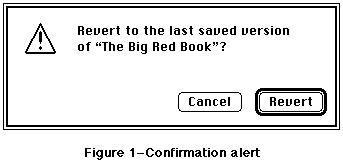
Figure 1–Confirmation alert
The alert in Figure 1 uses Revert instead of OK, since Revert neatly sums up what accepting the alert means.
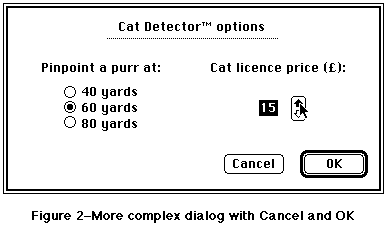
Figure 2–More complex dialog with Cancel and OK
The dialog box in Figure 2 uses OK because there is no succinct term to describe what accepting the changes in the dialog box means.
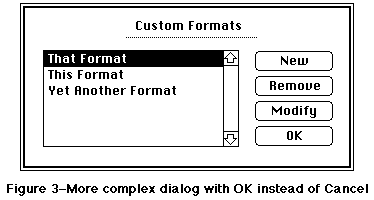
Figure 3–More complex dialog with OK instead of Cancel
The dialog box in Figure 3 uses OK because it doesn’t throw away all the changes that were made since the dialog box was first drawn. If the button were named Cancel instead, clicking it would remove any formats created since the dialog box was drawn, bring back any formats removed since the dialog box was drawn, and undo any changes that had been made by selecting a format and clicking Modify since the dialog box was drawn.
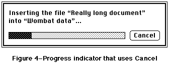
Figure 4–Progress indicator that uses Cancel
The dialog box in Figure 4 uses Cancel because clicking the button leaves the document named Wombat Data in the state it was in before the Insert File command was chosen.
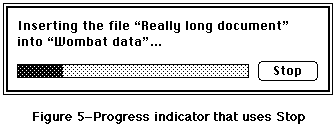
Figure 5–Progress indicator that uses Stop
The dialog box in Figure 5 uses Stop because clicking the button stops inserting text into the document named Wombat Data, but it doesn’t remove the text that has already been inserted.
006: Window Positions
Note #6 Window Positions
Written by: John Sullivan January 1990
_______________________________________________________________________________
Whenever a window is displayed on the screen, the application must make a decision about its size and location. If a user moved the window in an earlier session, then it should be restored to its previous position; otherwise, the application must choose an appropriate default position. This document gives details about making these decisions.
_______________________________________________________________________________
Saving and restoring window positions
Users change the locations and sizes of windows for a reason. They might want to view two documents side by side, or they might want to display a window on a larger monitor so that more of it can be seen at once. They might want to display only the interesting area of the window, which may be quite small, or they might want to position the window in such a way that certain icons on the desktop are still visible. In any case, one of the most important principles of a good interface is that the user is in control, so applications must respect the user’s reasoning by reopening each window in the same location and with the same size that the user left it.
Here is a simple, but effective, procedure for saving and restoring window positions:
1. When opening a new window, put it in the default position (see the
next section of this document for details about determining the
default position).
2. Before closing a movable window, check to see if its location or
size have changed. If so, save the new location and size. If the
window can be zoomed, save the user state and also save whether or
not the window is in the zoomed (standard) state. Note that if the
window corresponds to a Finder document and there were no other
changes to the document, the new location and size should be saved
without changing the modification date of the document.
Note: If the location and size of a movable window have
not changed, do not save them, because the default location
and size may be different the next time the window is opened
(e.g., if the window is reopened on a different Macintosh
with a different screen size).
3. When reopening a movable window, check its saved position. If the
window is in a position to which the user could have dragged it,
then leave it there. If the window can be zoomed and was in the
zoomed state when it was last closed, put it in the zoomed state
again. (Note that the current and previous zoomed states are not
necessarily the same, since the window may be reopened on a different
monitor.) If the window is not in a position to which the user could
have dragged it, then it must be relocated, so use the default
location. However, do not automatically use the default size when
using the default location; if the entire window would be visible
using the default location and the stored size, then use the stored
size.
Remember that checking to see if the saved position is reasonable before reopening the window is a necessary part of this procedure, not an option. When an application opens windows outside of the visible space, users tend to switch to competitors’ products.
Choosing a default window position
The appropriate default position of a window may depend upon several factors, including whether the window is a document window or an alert, the locations of other open windows, the user’s center of attention, and whether or not the window contains information that is closely related to other open windows. The rest of this document includes a series of default window position examples for several common cases. Developers should consider how their particular situations relate to these common ones to determine the best default positioning. In any case, the default position of any window must never overlap multiple screens, as this can look and feel very strange with monitors of different depth and resolution.
Independent document windows, single screen
On a single screen the first document window should be positioned in the upper-left region of the gray area of the screen. Each additional window should be staggered slightly below and to the right of its predecessor, if no windows are moved or closed. When a window is moved or closed, its original position becomes available again. The next window opened should use this position. Similarly, if a window is moved onto a previously-available position, that position becomes unavailable again. Figure 1 illustrates independent document windows on a single screen.
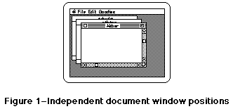
Figure 1–Independent document window positions
Independent document windows, multiple screens
The first document window should be positioned in the upper-left region of the gray area of the main screen (the screen with the menu bar). Each additional independent window should be staggered from the upper-left of the screen that contains the largest portion of the frontmost window. Thus, if the user starts the application, creates a single window, drags that window over to a secondary monitor, and then creates a second window, the second window and subsequent windows should appear on the secondary monitor. Figure 2 illustrates independent document windows on multiple screens.
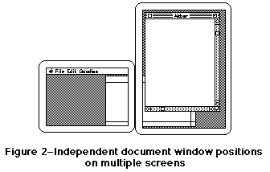
Figure 2–Independent document window positions on multiple screens
Child windows
A child window is a window that contains more detail about part of another window. For instance, in ResEdit a window showing all string resources of a given file is a child of the window showing all resource types for that file. Child windows of visible parent windows should be created just below and to the right of the parent window. Figure 3 illustrates child windows.
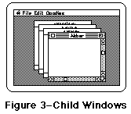
Figure 3–Child Windows
Alert or dialog box, single screen
Alerts or dialog boxes should be centered horizontally and positioned vertically such that one-third of the remaining vertical gray screen space is above the window and the other two-thirds are below. Figure 4 shows a typical alert.
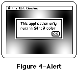
Figure 4–Alert
Alert or dialog box, multiple screens
This case is similar to the previous one, except that the alert or dialog box should be drawn on the screen closest to the user’s center of attention. Always putting an alert or dialog box on the screen containing the cursor is a good rule of thumb. An even better rule is to use the screen on which the last user action took place. For instance, if the user is typing into a word processing document and presses Command-O, put the standard file dialog box on the same screen as the word processing document. When an alert or dialog box appears in response to the user selecting a menu item with the mouse, put the alert or dialog box on the screen with the menu bar. Figure 5 shows an alert in a two-screen configuration.
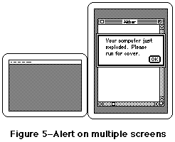
Figure 5–Alert on multiple screens
007: Who’s Zooming Whom?
Note #7 Who’s Zooming Whom?
Written by: John Sullivan April 1990
_______________________________________________________________________________
Further discussion about using the zoom box.
_______________________________________________________________________________
Introduction
A click in the zoom box toggles a window between two states, the user state and the standard state. The user state, as its name implies, is set by the user. The standard state is defined by the Apple Human Interface Guidelines (p. 48) as “generally the full screen, or close to it…the size and location best suited to working on the document.” That brief description has proven to be too brief in these days of larger and multiple monitors. This note is a more explicit guide to determining the appropriate standard state.
Size of the Standard State
When the zoom box was introduced, all Macintoshes had the same relatively small screen, so the “most useful” size of a window was almost always larger than the screen. Setting the standard state to the full screen size was, therefore, a good rule of thumb. This is no longer the case. These days, Macintosh monitors come in all shapes, sizes, and configurations, so applications should never simply assume that the standard state should be as large as the screen. Frequently the monitor is larger, sometimes much larger, than the most useful size for a window. Screen real estate is valuable, so screen-sized windows should be used only when they make sense.
For example, a document for a word processor has a well-defined “most useful width” (the width of a page) and a variable “most useful height” (depending on the number of pages). Therefore, the width of the standard state should be the width of a page or the width of the screen, whichever is smaller, and the height of the standard state should be the height of the screen or the height of the document, whichever is smaller.
Another example is a paint application whose documents are always exactly one page in size. In this case, the width of the standard state should be the width of a page or the width of the screen, whichever is smaller, and the height of the standard state should be the height of a page or the height of the screen, whichever is smaller.
Yet another example is an application that displays pictures but does not let users edit them. Since its pictures cannot be modified, making a window larger than the pictures it displays would not be useful. Therefore, the width of the standard state should be the width of the picture or the width of the screen, whichever is smaller, and the height of the standard state should be the height of the picture or the height of the screen, whichever is smaller. Note that this means that different document windows from the same application may have different standard states.
Position of the Standard State
One of the basic principles of the Apple Desktop Interface is “perceived stability.” Users are more comfortable in an environment that does not change in an apparently random manner; a window need not move just because it is changing in size. When toggling a window from the user state to the standard state, first determine the appropriate size of the standard state. If this size would fit completely on the screen without moving the upper-left corner of the window, keep this corner anchored. Otherwise, move the window to an appropriate default location (see Human Interface Note #6, Window Positions).
The Standard State on Multiple Monitors
Zooming behavior in multiple monitor environments should not violate any of the guidelines described herein, but it does introduce a single additional rule: the standard state should be on the monitor containing the largest portion of the window, not necessarily on the monitor with the menu bar. Note that this means the standard state for a single window may be on different monitors at different times if the user moves the window around. In any case, the standard state for any window must always be fully contained on a single screen.
Further Reference
_______________________________________________________________________________
• Human Interface Note #6, Window Positions
• Macintosh Technical Note #79, _ZoomWindow
008: Keyboard Equivalents
Note #8 Keyboard Equivalents
Revised by: Scott Jenson June 1990
Written by: Scott Jenson April 1990
_______________________________________________________________________________
Discussion of the standard Apple Human Interface keyboard equivalents.
_______________________________________________________________________________
Standard Keyboard Equivalents
N New Z Undo
O Open… X Cut
W Close C Copy
S Save V Paste
P Print… A Select All
Q Quit
These keyboard equivalents are reserved across all applications. If your application does not support one of these commands, it should not use these keys for any other function. This restriction is for the user’s benefit; it gives them guaranteed, predictable behavior across all applications. Using Command-O to mean “Open...” ninety-nine percent of the time and “Ostracize...” in your special case does two things: 1) users do not consider using Command-O, as it is already taken by all other applications, and 2) the variability of the equivalent only weakens their perception of consistency.
Other Common Keyboard Equivalents
F Find… T Plain Text
G Find Again B Bold
I Italic
U Underline
These Command keys equivalents are secondary to the standard keys previously listed. If your product does not support one of these functions, then feel free to use these equivalents as you wish.
Note that the keyboard equivalents for Print… and Plain Text are different from past Human Interface guidelines, which suggested P for Plain Text and nothing at all for Print. The marketplace has, by and large, standardized upon P for Print, leaving no common Command key equivalent for Plain Text. Apple has accepted this change and now suggests standardizing on T for Plain Text, based upon its mnemonic value and common usage among applications that use P for Print.
Unnecessary Command Keys
There should not be Command key equivalents for infrequently used menu commands. This type of usage only burdens your users and constrains your life even more. Only add Command key equivalents to commands your users use most frequently. As infrequently as it is chosen by most users, “Page Setup…” is an example of menu command that does not need a key equivalent.
009: Pop-Up Menus
Note #9 Pop-Up Menus
Written by: Scott Jenson & John Sullivan June 1990
_______________________________________________________________________________
A description of the new style of pop-up menus.
_______________________________________________________________________________
Introduction
Pop-up menus have been around on the Macintosh since HFS (Hierarchical File System) was introduced in 1986, and their use became much more widespread after the addition of Toolbox support in 1987. It is surprising, then, that many Macintosh users have no idea what pop-up menus are and do not recognize them when they see them. The problem is that pop-up menus do not look sufficiently different from other Macintosh interface elements; the one-pixel drop shadow that differentiates pop-up menus from editable text fields has proven inadequate. This Note presents the new standard appearance for the pop-up menu in System Software 7.0 and also describes how the new appearance lends itself to some new uses that were previously impossible.
Standard pop-up menus
Previously, pop-up menus were displayed by surrounding the current value of the menu with a one-pixel rectangle and a one-pixel drop shadow to the right and bottom. The new standard appearance adds a downward-pointing black arrow, which is identical to the arrow that indicates that a menu is too long to fit on the screen and must scroll. All pop-up menus should now use this new style. Figure 1 shows a simple pop-up menu in both the old and new styles.
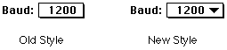
Figure 1–Old-style and new-style pop-up menus
Figure 2 shows an expanded view of the downward-pointing black arrow of this new-style pop-up menu.
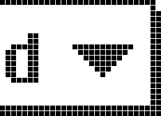
Figure 2–FatBits view of new-style pop-up menu
When the user clicks on the pop-up menu or its label text, the black arrow disappears and the menu pops up, and when the user releases the mouse button, the menu disappears and the black arrow is redrawn. Figure 3 illustrates the proper behavior of a pop-up menu when a user clicks on it.
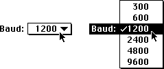
Figure 3–Pop-up menu before and during a mouse click
Pop-up menus with editable text fields
Sometimes it is useful to display a list of choices but still allow a user to enter or edit a choice that the application may not know in advance. One example is a font size field with an accompanying pop-up menu of commonly used sizes. The new standard pop-up menu appearance leads itself readily to this use, as shown in Figure 4.
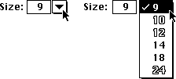
Figure 4–Pop-up menu with an editable text field
Note that as in standard pop-up menus, the black arrow disappears when a user clicks on it and reappears when a user releases the mouse button. Also note that an application should draw the pop-up menu so it automatically highlights the item that corresponds to the value in the edit text field; this technique prevents a quick click in the pop-up menu from accidently erasing the previous value.
If a user enters a value in the edit text field that does not match any of the pop-up menu’s items, then the pop-up menu should make that value the first item and separate it from the rest of the standard values with a gray line., as shown in Figure 5. This separation makes a clean distinction between common items, which are always available, and the user-entered value, which is only temporary. (In the case of the example in Figure 5, if the font size 13 had been inserted in order into the list, a subsequent selection of 10, or any other matching selection, would have removed it from the list.)
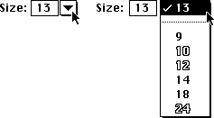
Figure 5–Pop-up menu with a non-matching edit text item
010: Alert Box Guidelines
Note #10 Alert Box Guidelines
Written by: Scott Jenson June 1990
(Slightly plagiarized from Kate Gomoll)
_______________________________________________________________________________
Some simple rules to follow for alert boxes.
_______________________________________________________________________________
Why there are alert box guidelines
From the feedback the Human Interface group has received, it is clear that the discussion of alert boxes in “Human Interface Guidelines: The Apple Desktop Interface” is both imperfect and incomplete.
These guidelines serve at least three major purposes. First, they provide a simple recipe for making attractive alert boxes. Second, they provide a simple recipe (the same one, in fact) for making alert boxes that have a standard appearance and behavior. This standardization is important, because the more familiar the appearance of an alert box is to users, the easier it is for them to concentrate on the specific message being communicated. Finally, these guidelines provide simple rules that can be extended for designing more complicated dialog boxes.
This Note supplements and partially replaces the discussion in “Human Interface Guidelines: The Apple Desktop Interface,” so where this Note and the book disagree, believe this Note.
Alert box layout
Alert boxes drawn with the toolbox calls _StopAlert, _NoteAlert, and
_CautionAlert place the icon in the rectangle (top = 10, left = 20, bottom = 42, right = 52); however, placement of all other elements is left to the individual designer. Figure 1 shows a simple alert box in which spacing between elements is based upon this placement of the icon.
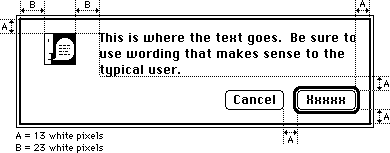
Figure 1–Simple alert box with spacing
Following are the exact coordinates used in Figure 1 and how they were derived, in Rez format. Note that there are three white pixels built into the dialog frame and that the upper left corner of the text item is not the same as the upper left corner of the first character.
The first set of definitions are not actual coordinates, but instead are intermediate values used to derive them:
#define A 13 // white space between most elements
#define B 23 // white space to left and right of icon
#define NumTextLines 3 // number of lines of text in the alert
#define LineHeight 16 // height of a single line of Chicago-12
#define ButtonHeight 20 // standard button height
#define LongestButtonName 41 // width of “Cancel” in Chicago-12
#define ButtonWidth 59 // (LongestButtonName + 18)
The rest of the definitions are actual coordinates defining the window size
(AlertWidth and AlertHeight) and the icon, text, and button locations:
#define AlertWidth 341 // chosen to make the right margin = A
#define IconLeft 20 // (B - 3)
#define IconRight 52 // (IconLeft + 32)
#define IconTop 10 // (A - 3)
#define IconBottom 42 // (IconTop + 32)
#define TextLeft 74 // (IconRight + (B - 1))
#define TextRight 331 // (AlertWidth - (A - 3))
#define TextTop 7 // (A - 6)
#define TextBottom 55 // (TextTop + (NumTextLines * LineHeight))
#define ButtonTop 68 // (TextBottom + A)
#define ButtonBottom 88 // (ButtonTop + ButtonHeight)
#define ActionButtonRight 331 // (AlertWidth - (A - 3))
#define ActionButtonLeft 272 // (ActionButtonRight - ButtonWidth)
#define CancelButtonRight 259 // (ActionButtonLeft - A)
#define CancelButtonLeft 200 // (CancelButtonRight - ButtonWidth)
#define AlertHeight 98 // (ButtonBottom + (A - 3))
The action button
Alert boxes that provide the user a choice should be worded as questions to which there is an unambiguous, affirmative response. The button for this affirmative response is called the action button. Whenever possible, label the action button with the action that it performs. Button names such as Save, Quit, or Erase Disk allow experienced users to click the correct button without reading the text of a familiar dialog. These labels are often clearer than words like OK or Yes. Phrase the question to match the action that the user is trying to perform. For instance, if the user selects Revert to Saved, the confirmation alert should say something like “Revert to the last saved version of the document? Any changes made since the last save will be lost.” This message is much clearer than something like “Discard changes made since the last save?”
If the action cannot be condensed conveniently into a word or two, use OK. Also use OK when the alert is simply giving the user information without providing any choices.
The cancel button
Whenever possible, provide a button that allows the user to back out of the operation that caused the alert box to be displayed. This button is activated when the user types Command-. (period) or presses the Escape key. (Note that the Command key sequence may differ depending upon the script system in use. See Macintosh Technical Note #263, International Canceling, for more information.) Apple recommends naming this button Cancel, so that users can easily identify it as the safe escape hatch. For more information, see Human Interface Note #5, “What Cancel Means.”
The default button
In most cases, the default button should perform the most likely action (if that can be determined). This usually means completing the action that the user initiated to display the alert box in the first place; therefore, the default button is usually the same as the action button. The default button is boldly outlined, and its action is performed when the user presses the Return or Enter key.
If the most likely action is dangerous (for example, it erases the hard disk), the default should be a safe button, typically the cancel button. If none of the choices are dangerous and there is not a likely choice, then there should be no default button.
When there is no default button, the user must explicitly click on one of the buttons (pressing Return or Enter does not perform an action). By requiring users to explicitly click on a button, you can protect them from accidentally damaging their work by pressing the Return or Enter key out of habit.
Buttons (placement, size, capitalization, and feedback)
Put the action button in the lower right corner, with the cancel button to its left. Use this placement regardless of which button is the default button; put the action button in the lower right corner even if the cancel button is the default.
Buttons in alert boxes look best when they are 20 pixels high (not counting the default button outline) and have at least 8 white pixels on either side of each button’s name. These specifications mean that the width of the button should be at least 18 pixels larger than the width of the longest button name (16 pixels for the white space plus 2 pixels for the edges). It looks best to make all buttons the same width, unless the buttons’ names have extremely different length names. If you find yourself tempted to make buttons with extremely long names, reconsider the names carefully; button names should be simple, concise, and unambiguous.
Capitalize the first letter of each button name, but never capitalize the entire name—with the single exception of the OK button. The OK button should always be named OK and never ok, Ok, Okay, okay, OKAY, or any even stranger variation. If a button name contains more than one word, capitalize each word, such as Replace All or Cancel Printing.
As in all dialog boxes, any buttons that are activated by key sequences must flash to give visual feedback as to which item has been chosen. A good rule of thumb is to invert the button for eight ticks; this is long enough so that it is always visible, but short enough that it is not annoying. Alert box calls in the Toolbox use the eight tick value by default.
_______________________________________________________________________________
Further Reference
• Human Interface Note #5, What Cancel Means
• Macintosh Technical Note #263, International Canceling
011: Mixed Settings for Controls and Menus
Note #11: Mixed Settings for Controls and Menus
Written by: Elizabeth Moller November 11, 1991
How to display menus and controls which describe a selection containing mixed attributes.
______________________________________________________________________________
Introduction
Controls and menus are often used to display and set the attributes of a selection of text or group of objects. A problem arises, however, when the selection contains a mixed set of attributes, such as a selection of text that is formatted partially in Bold and partially in Italic. This note discusses the appearance and behavior of mixed state menus, radio buttons, check boxes, and pop-up menus.
Menus
In menus, a dash to the left of a menu item is used to indicate a mixed setting. For example, if two or more items with different labels are selected in the System 7.0 Finder, a dash appears next to each menu item in the Label menu that describes the label setting for at least one, but not all, of the selected items. Menu behavior depends on whether the menu items are mutually exclusive, such as text size, or independent, such as text style. (The exception in the Style menu is the Plain menu item, which is mutually exclusive with other styles.)
Mutually exclusive items follow the same guidelines as radio buttons: one selection deselects all items in the group except the one selected. The selected item is then marked by a check to the left of the menu item.
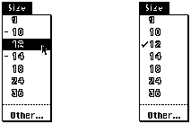
Figure 1-Mutually exclusive menu items, before and after selection
Selecting an independent menu item does not affect the settings of other menu items. The selected menu item is marked by a check and that attribute is applied to the current selection.
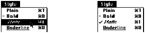
Figure 2 - Independent Menu items, before and after selection
Radio buttons and Check Boxes
The design for the mixed state of radio buttons and check boxes is derived from the menu design. The mixed state of a radio button or check box is displayed as a six pixel long dash through the middle of the control.
Figure 3 - Enlarged view of mixed state for radio button and check box
In the example shown in Figure 4, the user has made a selection that contains text formatted with different styles and justification. The dialog correctly shows the mixed radio button and check box settings. If the user selects a radio button, all mixed radio button settings in the group disappear. There is no way to return any button to the mixed state without canceling the dialog and starting again.
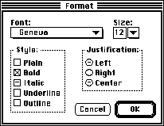
Figure 4 - Example of dialog containing mixed control settings
If the user clicks on a check box with a mixed setting, the check box becomes selected (checked). Thereafter, the check box cycles normally from checked to unchecked with each click. As with radio buttons, the only way to return a check box to the mixed state is to cancel the dialog and start again. This keeps the behavior of menus, radio buttons and check boxes consistent.
Pop-up Menus
Pop-up menus present a problem for displaying mixed settings. The act of clicking on a pop-up menu to see the choices and releasing the mouse button triggers a selection, which alters any mixed state settings. It is best to avoid a situation that requires a mixed state pop-up menu if possible.
Pop-ups should follow the basic rules of pull down menus. If there is a mixed selection of objects or text, there should be dashes next to the appropriate menu items. A closed pop-up menu should indicate a mixed selection by using an appropriate menu item name, such as “Mixed Fonts”. When the menu is open, this item is displayed at the top of the menu, separated from the rest of the items by a gray line. If the user clicks on the menu to see the choices, simply releasing the mouse button again does not change the selection. If the user makes a selection, however, the mixed selection item is no longer available.
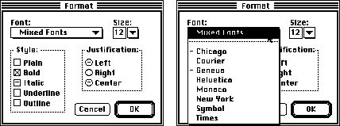
Figure 5 - Mixed state pop-up menu
The same design can be used for editable pop-up menus. The edit field should be left blank and the accepted contents of the editable portion of the pop-up do not change (i.e. the user can not enter the words “Mixed Sizes”).
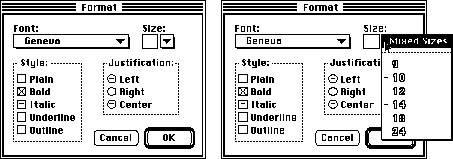
Figure 6 - Mixed state editable pop-up menu
012: Specifying Folders with Standard File
Note #12: Specifying Folders with Standard File
Written by: Elizabeth Moller November 11, 1991
Discussion of modifications to the standard file dialog box for specifying folders.
_______________________________________________________________________________
Introduction
The standard file dialog box is the usual interface for specifying a location in the Macintosh hierarchical file system. It is commonly used for finding and saving documents. Some applications, however, want the user to specify the location of a folder for storing a group of related documents. For example, an electronic mail application could ask where to save mail that is automatically retrieved. But the standard file dialog box is designed for choosing documents, not folders. When a folder is selected in the standard file dialog list, the Open button opens the folder, revealing the items inside. There is no obvious mechanism for choosing the selected folder instead of opening it.
Modified Standard File Dialog
To allow the user to choose a folder, add an additional “Choose” button to the standard file dialog box. This button gives the user an obvious way to choose the selected folder while preserving the existing mechanism for opening folders. The addition of a prompt (Choose a Folder:) informing the user what type of selection is required, helps to clarify the purpose of the dialog.
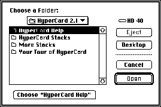
Figure 1–Modified standard file dialog box
If there is no selected item, pressing the Choose button should open the folder displayed in the pop-up, and the Open button should be disabled. Long folder names should be abbreviated using an ellipses. (See Inside Macintosh VI, chapter 14, pages 47 and 59-60.)
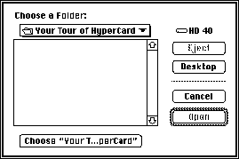
Figure 2–Long folder names and no selected item
The same design can be used to choose other types of containers. Containers are items which can be opened to reveal other items inside, such as folders and hard disks. For instance, a disk repair application could ask the user to specify which hard disk to check. When the user clicks on the Desktop button, the Choose button should read “Choose Desktop” and should be disabled. All items that are not containers, such as applications and documents, should be filtered from the list.
The Return and Enter keys should always select the default button. Command-C should be used as a keyboard shortcut for the Choose button in addition to Command-D for selecting the Desktop button, Command-O for selecting the Open button, and Command-Period for selecting the Cancel button.
013: Unavailable Document Fonts
Note #13: Unavailable Document Fonts
Written by: Scott Jenson November 1991
How to warn the user when opening a document that contains fonts not currently available.
_______________________________________________________________________________
Introduction
Networking services such as electronic mail and Macintosh File Sharing have made it very easy for users to copy documents between their computers. Frequently, the fonts available on the sending Macintosh are different from those on the receiving machine. This sets up a potential problem that the receiving Macintosh will try and open a document that contains fonts currently not available in its System file.
It is best to treat this as an error condition which must address two important user needs. The first is the need for information. The user must know enough detail about the problem to both understand what has happened and also take corrective action. The second is the need for user control. They must be allowed to stop and correct the problem or to continue opening the document with a reasonable substitution for the missing fonts.
The following guideline suggests one solution to meet these needs. It is not intended to cope with complex document interchange problems that need to map each missing font to a different font in an attempt to maintain overall document format. This is a valid problem, but also a complex one that is not needed by the majority of users.
Initial Alert
When opening a document containing fonts not currently available in the system, put up a warning alert indicating which fonts are missing and which available font will be a temporary substitute. This warns the user of the pending problem but also gives adequate information to either stop and correct the problem, or to continue, expecting the document to change. An example of this alert is shown in Figure 1.
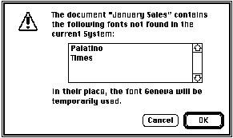
Figure 1. Alert when opening the document.
Once open, it is important that this font substitution is not saved permanently in the document. The font mapping only lasts while the document is open. If closed and then opened later with the original fonts available, the document should display all fonts with no substitution.
Font Menu feedback
Once the document is open, any selection that should be displayed in a missing font but is instead using a substitute should not reflect the substitute font in the menu. The most useful feedback would be to include all missing fonts as disabled menu items in the font menu and then mark the missing fonts with check marks as shown in Figure 2. In this example, the original Palatino text displays as Geneva but the Font menu still indicates Palatino.
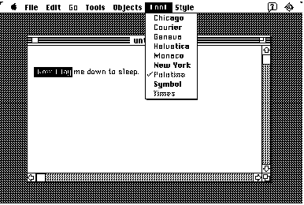
Figure 2. Showing the original font in the Font menu
Another less useful approach is to make no marks at all in a font menu composed only of the available fonts in the system. This obviously doesn’t give the user as much feedback but for a simple application is adequate, given the use of the alert in Figure 1.